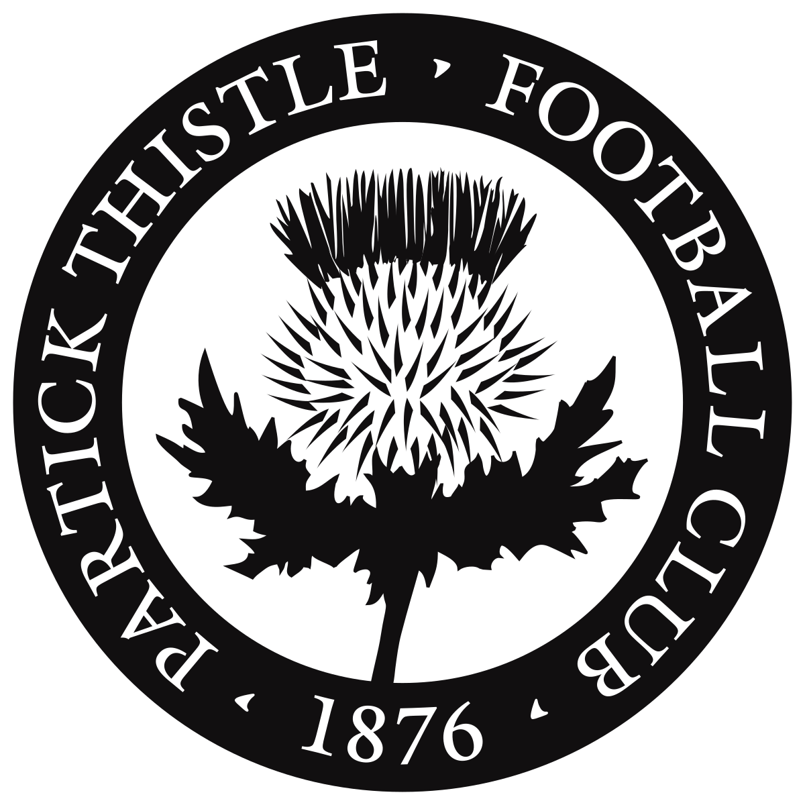

Partick Thistle
The great Glasgow alternative, why not take in a match at the Stadium of Dreams, Firhill Stadium. Lose, draw or lose you’ll fall in love with them. There’s only one team in Glasgow.
*There is also Celtic and Rangers.